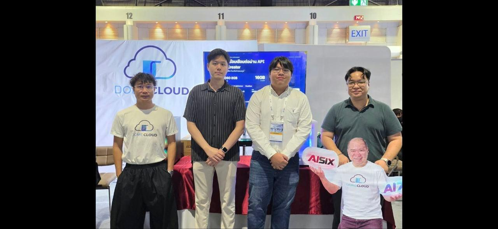
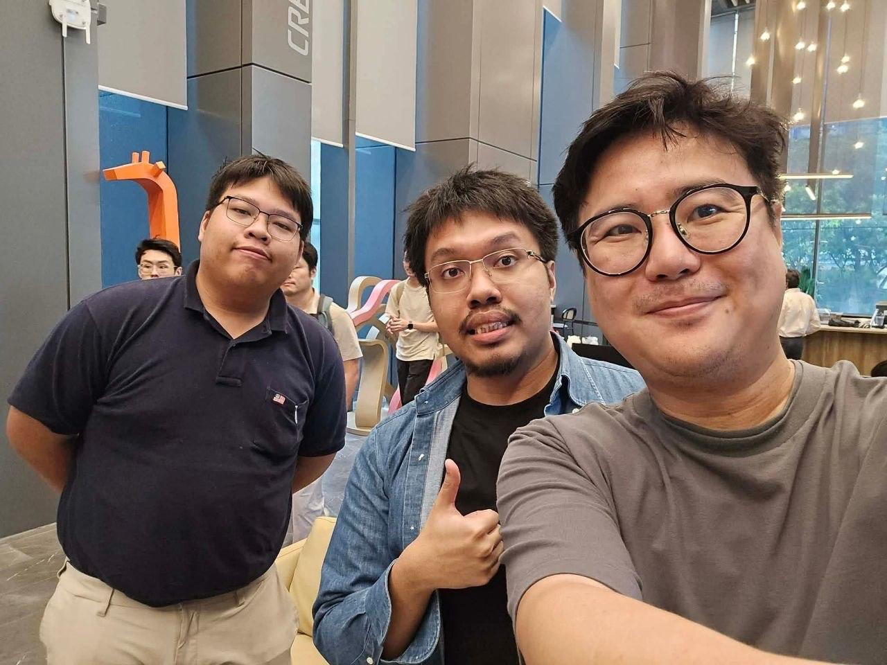

Watcation 🛕
🎤 C · BUSINESS
TED Fund · Ideation · 2569
Your AI agent talks
to the temple's.
แพลตฟอร์มนอนวัด — ที่ AI สองฝั่งเจรจากันเอง ให้นักท่องเที่ยวต่างชาติ ค้น เทียบ จอง และเตรียมตัว จบในบทสนทนาเดียว
🎤 C · BUSINESS
PROBLEM / MARKET
เกาหลี 349,219 คน/ปี —
ไทยคือต้นบ้าน แต่ไม่มีระบบ
40,000+ วัด
ต้นบ้านของ temple stay — แต่ไม่มีระบบรวม ข้อมูลกระจัดกระจายทีละเว็บ
กำแพงภาษา + มารยาท
"You can't understand if the monk is teaching" — คำสอนส่วนใหญ่เป็นภาษาไทย
Solo women 84%
กลุ่มหลักที่ต้องการความปลอดภัย + โครงสร้าง ที่วัดให้ได้พอดี — แต่เข้าไม่ถึง
🎤 C · BUSINESS
SOLUTION
AI Temple Concierge —
จบใน บทสนทนาเดียว
บอกความต้องการเป็นภาษาของคุณ → agent เจรจากับวัด → ได้การจองที่ตรวจสอบได้
ค้นหา
เทียบวัด
เช็คว่าง
จอง + ข้อตกลง 2 ภาษา
Itinerary รอบวัด
🎤 A · TECH
ARCHITECTURE — AGENT-TO-AGENT
Traveler Agent ⇄ Temple Agent
เจรจากันเอง — ผู้ใช้เห็นทุก hop
Traveler Agent
พูดภาษาผู้ใช้ (EN/中/日/TH) จับความต้องการ → ยิง structured tool call ไปที่วัด
Temple Agent (RAG-only)
ground กับ KB ของวัดนั้น — ตอบเฉพาะข้อมูลจริง นอก KB ปฏิเสธทันที ไม่เดาเรื่องศาสนา
Conversation Log
ผู้ใช้เห็นการเจรจาสองฝั่งสด ๆ — trust มาจากความโปร่งใส
🎤 A · TECH
RECEIPTS — พิสูจน์ด้วยตัวเลข
POC ใช้งานได้จริง — และมีข้อสอบ
4/4
E2E tests — ครบ flow จริง
17/17
Agent evals — คุณภาพคำตอบ
10/10
Guardrail — ปฏิเสธนอก KB ถูกต้อง
วัด 5 วัดข้อมูลจริงในระบบ · บูธ expo จริงกับ DomeCloud · ทีมติดต่อ community Qwen/Alibaba Thailand
🎤 B · FINANCE
BUSINESS MODEL
ไม่เช่าวัด — ขายแพ็กเกจประสบการณ์
≥70%
รายได้/บริจาคถึงวัด — โปร่งใส
20–30%
platform margin (OTA ทั่วไปหัก 20–40%)
B-side คุณค่า
ส่งแขกที่ "มาถูกเตรียม" — รู้ตาราง รู้มารยาท ก่อนถึงวัด (แก้ pain ที่พระเหนื่อยอยู่แล้ว)
🎤 B · FINANCE
ROADMAP — BANGKOK FIRST
ยึด กทม. ให้แน่น แล้วขยายทั้งประเทศ
Stage 1 · กทม. ครบโซน (ด.1–4)
เกาะรัตนโกสินทร์ ✅ วัดราชนาดูร · ฝั่งธนบุรี · เยาวราช · สุขุมวิท · หนองจอก ✅ วัดประยุรวัตนาราม → เปิดจองจริง เป้า 100 bookings
Stage 2 · ทั่วประเทศ (ด.4–6)
เชียงใหม่ · แม่ฮ่องสอน · อุบลฯ · ปาย · ภูเก็ต · สุราษฎร์ → 10+ วัด · 300+ bookings · จดทะเบียนนิติบุคคล
🎤 B · FINANCE
VISION — วัดคือ vertical แรก ไม่ใช่เส้นชัย
เครื่องยนต์เดียวกัน — องค์กรไทยทุกแบบ
✅ วัด (กำลังทำ)
Soft power ตามแผนชาติ 10 ปี
พิพิธภัณฑ์ / มรดก
ปัญหาข้อมูลกระจัดกระจายเหมือนกัน
หน่วยงานราชการ / กลาโหม
AI ที่ ground กับข้อมูลจริง — ไม่เดา

DomeCloud — AI gateway · local model inference · AI governance

Qwen Ambassador Thailand — ecosystem Alibaba / open-weight
🎤 C · BUSINESS
THE ASK
ขอทุน ฿150,000 — Ideation
ต่อยอด POC → pilot วัด 3–5 วัดในกรุงเทพฯ ครบโซน → เปิดจองจริง 100 bookings → วัดรวม 10+ วัดภายใน 6 เดือน พร้อมจดทะเบียนนิติบุคคล (IP ทีม 100%)